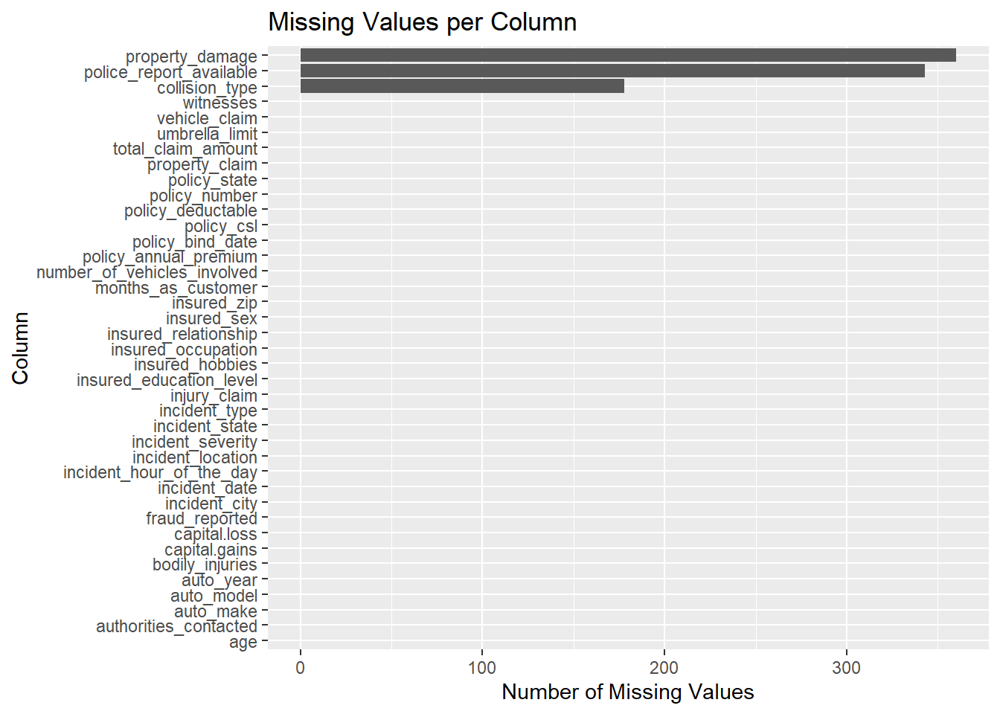

While the original post on Oracle has been removed, which limits our understanding of the exact data collection methodology, the dataset appears to have been personally compiled by the contributor. Despite these limitations, our research indicates that this dataset has been explored in various academic and practical contexts, as evidenced by its usage in projects hosted on platforms like Databricks and GitHub, which can be found at Databricks Project and GitHub - Insurance Fraud Claims Detection, respectively. These explorations suggest its high potential for academic research and application.
We acknowledge that obtaining proprietary insurance information is difficult and therefore there are not many publicly available datasets. Despite the lack of detailed background on data collection, we believe that this dataset offers a valuable opportunity to apply our classroom knowledge to real-world data.
As for importing the data, we downloaded it from the GitHub repository and then imported it into our local environment for analysis. We will provide a detailed description of the dataset’s characteristics, including its format and dimensions, in the Description part.
2.1 Description
The data is in .csv format. There are 1,000 rows with 40 columns, however, the column “_c39” is all null so we will drop it before our analysis.
There are 38 attributes (features) in total in the data. They can be divided into five main categories, which are Personal and Policy Information, Location and Vehicle Information, Incident Details, Claim Information and Other Attributes:
Personal and Policy Information: It contains columns for customer characteristics such as months_as_customer, age, policy_number, policy_bind_date, policy_state, policy_csl (Combined Single Limit), policy_deductable, policy_annual_premium, and umbrella_limit.
Location and Vehicle Information: There are details about the insured_zip, incident_location, incident_hour_of_the_day, as well as information about the vehicle involved like auto_make, auto_model, and auto_year.
Incident Details: The dataset includes specific details about incidents such as incident_date, incident_type, collision_type, incident_severity, authorities_contacted, and whether a police_report_available.
Claim Information: This encompasses the total_claim_amount, injury_claim, property_claim, vehicle_claim, and whether the claim was reported as fraud (fraud_reported).
Other Attributes: Additional attributes include details about the insured like insured_sex, insured_education_level, insured_occupation, insured_hobbies, insured_relationship, as well as information about witnesses, bodily injuries, and other aspects related to the insurance claims.
Below is what our data looks like:
Code
data <-read.csv('insurance_claims.csv', na.strings =c("?", "NA"))head(data)
months_as_customer age policy_number policy_bind_date policy_state policy_csl
1 328 48 521585 2014-10-17 OH 250/500
2 228 42 342868 2006-06-27 IN 250/500
3 134 29 687698 2000-09-06 OH 100/300
4 256 41 227811 1990-05-25 IL 250/500
5 228 44 367455 2014-06-06 IL 500/1000
6 256 39 104594 2006-10-12 OH 250/500
policy_deductable policy_annual_premium umbrella_limit insured_zip
1 1000 1406.91 0 466132
2 2000 1197.22 5000000 468176
3 2000 1413.14 5000000 430632
4 2000 1415.74 6000000 608117
5 1000 1583.91 6000000 610706
6 1000 1351.10 0 478456
insured_sex insured_education_level insured_occupation insured_hobbies
1 MALE MD craft-repair sleeping
2 MALE MD machine-op-inspct reading
3 FEMALE PhD sales board-games
4 FEMALE PhD armed-forces board-games
5 MALE Associate sales board-games
6 FEMALE PhD tech-support bungie-jumping
insured_relationship capital.gains capital.loss incident_date
1 husband 53300 0 2015-01-25
2 other-relative 0 0 2015-01-21
3 own-child 35100 0 2015-02-22
4 unmarried 48900 -62400 2015-01-10
5 unmarried 66000 -46000 2015-02-17
6 unmarried 0 0 2015-01-02
incident_type collision_type incident_severity
1 Single Vehicle Collision Side Collision Major Damage
2 Vehicle Theft <NA> Minor Damage
3 Multi-vehicle Collision Rear Collision Minor Damage
4 Single Vehicle Collision Front Collision Major Damage
5 Vehicle Theft <NA> Minor Damage
6 Multi-vehicle Collision Rear Collision Major Damage
authorities_contacted incident_state incident_city incident_location
1 Police SC Columbus 9935 4th Drive
2 Police VA Riverwood 6608 MLK Hwy
3 Police NY Columbus 7121 Francis Lane
4 Police OH Arlington 6956 Maple Drive
5 None NY Arlington 3041 3rd Ave
6 Fire SC Arlington 8973 Washington St
incident_hour_of_the_day number_of_vehicles_involved property_damage
1 5 1 YES
2 8 1 <NA>
3 7 3 NO
4 5 1 <NA>
5 20 1 NO
6 19 3 NO
bodily_injuries witnesses police_report_available total_claim_amount
1 1 2 YES 71610
2 0 0 <NA> 5070
3 2 3 NO 34650
4 1 2 NO 63400
5 0 1 NO 6500
6 0 2 NO 64100
injury_claim property_claim vehicle_claim auto_make auto_model auto_year
1 6510 13020 52080 Saab 92x 2004
2 780 780 3510 Mercedes E400 2007
3 7700 3850 23100 Dodge RAM 2007
4 6340 6340 50720 Chevrolet Tahoe 2014
5 1300 650 4550 Accura RSX 2009
6 6410 6410 51280 Saab 95 2003
fraud_reported X_c39
1 Y NA
2 Y NA
3 N NA
4 Y NA
5 N NA
6 Y NA
2.2 Research plan
Our project will initially focus on an exploratory analysis of each category of data in the dataset, aiming to unearth potential connections among them and their relationship with insurance fraud. Then we will employ techniques such as regression analysis and Principal Component Analysis (PCA). These methods will enable us to compare and quantify the impact of different factors on the likelihood of fraud.
By conducting this multi-dimensional analysis, we will leverage the dataset’s comprehensive range of data - encompassing geographical trends, policy features, demographic characteristics, incident specifics, and vehicle information. This approach will not only help us identify patterns and insights in each data category but also allow us to understand the cumulative impact of these factors on insurance fraud.
2.3 Missing value analysis
In this dataset, all the missing data are represented by “?” elements, so we need to replace all “?” elements with null values. Besides, there is one column named “_c39” with all null values that can be dropped.
Code
data <-read.csv('insurance_claims.csv', na.strings =c("?", "NA"))data <-subset(data, select =-X_c39)
Then calculate the number of missing values in each column and visualize the missing data using a bar plot for an overview.
Code
library(ggplot2)library(dplyr)# Count missing valuesmissing_values <-sapply(data, function(x) sum(is.na(x)))missing_data_frame <-data.frame(column =names(missing_values), missing_count = missing_values)# Create a data frame for plottingmissing_data_frame <-data.frame(column =names(missing_values), missing_count = missing_values)# Create the bar plot with ggplot2ggplot(missing_data_frame |>arrange(desc(missing_count)), aes(x =reorder(column, missing_count), y = missing_count)) +geom_bar(stat ="identity") +coord_flip() +# Reverse the coordinate systemxlab("Column") +ylab("Number of Missing Values") +ggtitle("Missing Values per Column") # Add titles and labels as needed

Obviously, there are only three columns with missing values, so we proceed to drop all the other columns and use plot_missing in redav to plot the them.
The patterns indicated by these plots suggest that the missing data is mostly concentrated in a single variable which is illstrated by the fact that case 2 and 3 in missing pattern are significantly more than other cases. Missingness spreading across several variables needs to be handled carefully, as it could bias the results of any analysis performed on the dataset. Techniques such as imputation or the use of models that can handle missing data might be necessary to account for the missing values.